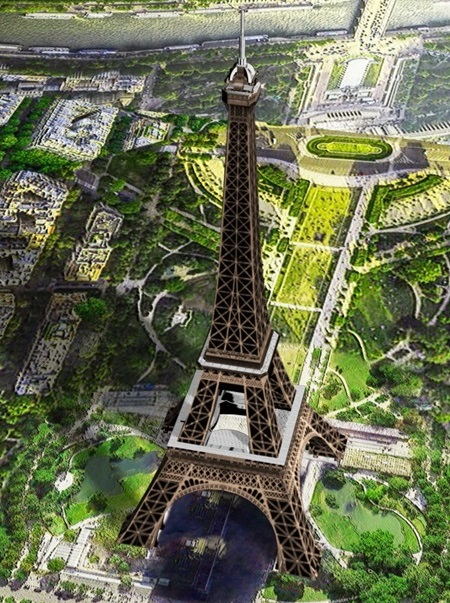

Eiffel Tower
An image is given on the left side below, and a scan button is provided on the right side. When you click the scan button and scan the image on the left, you will be able to see a video of the Eiffel Tower.
An image is given on the left side below, and a scan button is provided on the right side. When you click the scan button and scan the image on the left, you will be able to see a video of the Eiffel Tower.